Introduction
libossia is a modern C++, cross-environment distributed object model for creative coding.
It allows to declare the architecture of your creative coding application's functions as a tree of OSC nodes and parameters. These nodes/parameters can have attributes, which allow to declare many of their properties, such as their values, types, units, ranges, etc....
This OSC tree-based architecture (coined "device" in the OSSIA terminology) can then be exposed over the network under several protocols, some of which allow this architecture, and the properties and values of its nodes, to be fully explored and queried. For now, protocols available in the implemenations are: plain OSC, OSCquery, Midi - more are part of libossia and will be made available in the future.
libossia offers bindings and implementations for several environments: PureData, Max/MSP, Python, Unity3D, QML, Faust, SuperCollider.
Here's a quick explanation of the bindings:
- C : a C89 binding that should work everywhere and has a stable and strong API & ABI guarantee.
- Safe C++: a simplified C++ binding, kept compatible with C++98, which makes it hard to have problems at the cost of performance.
- Fast C++: the native libossia API, written in modern C++14. Subject to frequent updates and changes; use to get maximal performance.
- Python: Python 2 / 3 bindings made with pybind11.
- QML: Bindings for the Qt declarative UI language, QML. Very nice for user interfaces.
- OFX: OpenFrameworks bindings. Requires the ofxOssia addon.
- Unity3D: Bindings for the Unity3D game engine. Required C# files are here.
- Pd: PureData bindings. Requires at least Pd vanilla 0.48/
- Max: Max/MSP bindings. Requires at least Max 7.
- SuperCollider: Requires a custom build of SuperCollider.
- Faust: A Faust architecture file is provided. It should be modified however to tailor your own system.
The interactive sequencer score is an example of software based on libossia.
Setup
Installation/Compilation
// device.c:
#include <ossia-c/ossia-c.h>
int main(int argc, char** argv) { }
// Assuming the release package is extracted here:
// Linux:
gcc -std=c89 device.c -Iossia/include -Lossia/lib -lossia
// Mac:
clang -std=c89 device.c -Iossia/include -Lossia/lib -lossia
// Windows with MSVC: run in a Visual Studio shell:
cl.exe -std=c89 device.c -Iossia/include ossia/lib/ossia.lib
// device.cpp:
#include <ossia-cpp/ossia-cpp98.hpp>
int main(int argc, char** argv) { }
// Assuming the release package is extracted here:
// Linux:
g++ -std=c++98 device.c -Iossia/include -Lossia/lib -lossia
// Mac:
clang++ -std=c++98 device.c -Iossia/include -Lossia/lib -lossia
// Windows with MSVC: run in a Visual Studio shell:
cl.exe device.c -Iossia/include ossia/lib/ossia.lib
// device.cpp:
#include <ossia/ossia.hpp>
int main(int argc, char** argv) { }
// Assuming the release package is extracted here:
// Linux:
g++ -std=c++1z device.c -Iossia/include -Lossia/lib -lossia
// Mac:
clang++ -std=c++1z device.c -Iossia/include -Lossia/lib -lossia
// Windows with MSVC: run in a Visual Studio shell:
cl.exe device.c -Iossia/include ossia/lib/ossia.lib
# device.py:
import ossia_python as ossia
# Run with ossia_python.{so,dll,dylib} in the current folder
python device.py
// Device.qml
import Ossia 1.0 as Ossia
Item {}
// Extract the Ossia folder in the Qt/qml folder, e.g.
// /home/myself/Qt/5.9.1/gcc_64/qml
// /Users/myself/Qt/5.9.1/clang_64/qml
// c:\Qt\5.9.1\msvc2017_64\qml
// etc...
// and run :
qmlscene Device.qml
//Due to a bug in the boost library , you’ll have to use openframework in versions >= 1.0 (i.e. from the nightly builds) and ofxOSSIA's ofx0.10 git branch
//Then, like every other ofx addon: clone the repository https://github.com/OSSIA/ofxOssia in the ofx addons folder
//At the installation, or for libossia updates, you'll have to clone and compile libossia and dependenices for this, run the build script in the lib folder as is described in the README.md file
//Then:
//in ofApp.h
#include "ofxOssia.h"
private:
ofxOssia ossia;
// Create a new empty GameObject named OssiaController
// Add the Controller script to it :
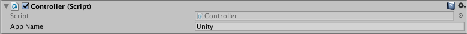
Extract in ~/pd-externals on Linux, ~/Documents/Pd/externals on Mac
(Install with Deken will be possible upon public release)
Extract the ossia package to Documents/Max 7/Packages.
(Installing from Max's Package Manager will be possible upon public release)
Notice that ossia-supercollider has only been tested on Mac, so far.
to install, run the following commands
git clone https://github.com/ossia/ossia-supercollider.git
cd ossia-sc
./build.sh
-> SuperCollider folder with application should now be installed in build/SuperCollider
Basic networking
Local OSCQuery device
A device represents a tree of parameters.
Local devices map to real parameters on the executable libossia is used with. For instance the frequency of a filter, etc.
Remote devices are mirror images of local devices on other applications: remote controls, mobile apps, etc. Every parameter in a local device will be synchronized with the remote devices that connected to it.
Devices can be mapped to different protocols: OSC, OSCQuery, Midi, etc. For the sake of simplicity, some bindings tie together device and protocol implementation.
We use OSCQuery as an example of protocol here. Once a device has been created, it is possible to check what's in it by going to http://localhost:5678.
For more information on the OSCQuery protocol, please refer to the proposal.
#include <ossia-c/ossia-c.h>
...
ossia_protocol_t proto = ossia_protocol_oscquery_server_create(1234, 5678);
ossia_device_t dev = ossia_device_create(proto, "supersoftware");
...
ossia_device_free(dev);
ossia_protocol_free(proto);
#include <ossia-cpp/ossia-cpp98.hpp>
...
opp::oscquery_server dev("supersoftware");
#include <ossia/ossia.hpp>
...
ossia::net::generic_device dev{
std::make_unique<ossia::oscquery::oscquery_server_protocol>(1234, 5678),
"supersoftware"};
import ossia_python as ossia
local_device = ossia.LocalDevice("super software")
local_device.create_oscquery_server(3456, 5678, False)
import Ossia 1.0 as Ossia
...
Ossia.OSCQueryServer {
name: "supersoftware"
}
// setup ofxOssia, by default it uses oscquery protocol on ports 3456 and 5678
ossia.setup();
// you can specify your parameters by adding customs value in setup fonction :
// void setup("OSCQuery","customName",localportOSC, localPortWS);
using Ossia;
...
var proto = new Ossia.OSCQuery(1234, 5678);
var dev = new Ossia.Device(proto, "supersoftware");
By default, pd creates a global device under which
all parameters and models will be registered
This global device can be configured with the [ossia] object.
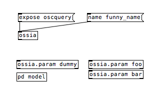
Sending the (expose oscquery) message to the ossia object
will expose this global device
with the default OSCquery ports, i.e. 9999 for OSC and 5678 for WS
It is also possible (and more powerful and flexible) to declare
a patcher as a separate device with the [ossia.device] object
(and all its subpatchers until a new device is declared).
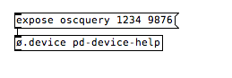
Here we declare this device with specific OSC and WS ports
By default, Max creates a global device under which
all parameters and models will be registered
This global device can be configured with the [ossia] object.
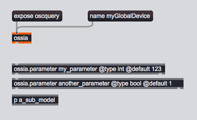
Sending the (expose oscquery) message to the ossia object
will expose this global device
with the default OSCquery ports, i.e. 9999 for OSC and 5678 for WS
It is also possible (and more powerful and flexible) to declare
a patcher as a separate device with the [ossia.device] object
(and all its subpatchers until a new device is declared).
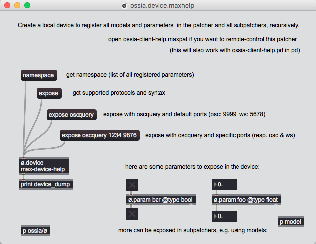
Here we declare this device with specific OSC and WS ports
~some_device = OSSIA_Device('supersoftware');
~some_device.exposeOSCQueryServer(1234, 5678);
// or
~some_device = OSSIA_Device.newOSCQueryServer('supersoftware', 1234, 5678);
Creating nodes
The nodes in the device are simply called "nodes" in the API.
Nodes are identified with the OSC parameter syntax: /foo/bar.
Nodes per se don't carry any value; they have to be extended with parameters to be able to send and receive messages.
ossia_protocol_t proto = ossia_protocol_oscquery_server_create(1234, 5678);
ossia_device_t dev = ossia_device_create(proto, "supersoftware");
ossia_node_t root = ossia_device_get_root_node(dev);
ossia_node_t a_node = ossia_node_create(root, "/foo/blu");
opp::oscquery_server dev("supersoftware");
opp::node n = dev.get_root_node().create_node("/foo/blu"));
ossia::net::generic_device dev{
std::make_unique<ossia::oscquery::oscquery_server_protocol>(1234, 5678),
"supersoftware"};
auto& n1 = ossia::net::create_node(dev, "/foo/bar");
foo_bar = local_device.add_node("/foo/bar/")
import QtQuick 2.7
import QtQuick.Controls 2.0
import Ossia 1.0 as Ossia
...
ApplicationWindow {
visible: true
id: root
Ossia.OSCQueryServer {
id: device
name: "supersoftware"
}
Ossia.Node { node: "/foo/bar" }
Item {
// Will give /foo/bar/hello
Ossia.Node { node: "hello" }
}
Component.onCompleted: device.recreate(root)
}
_parent_node = ossia.getRootNode();
//Then you can create nodes on top of that :
ossia::ParameterGroup _myGroup;
ossia::Parameter<float> _val ;
_myGroup.setup(_parent_node, "theOSCNameOfMyGroup");
_val.setup(_myGroup, "valOSCName", value, min, max);
// ossia::ParameterGroup and ossia::Parameter are based on top of of::ParameterGroup and of::Parameter. The main difference is that YOU HAVE to give a root node. The adding method of parameter into parameterGroup is then called during the setup fonction.
// should also work on deletion.
dev.GetRootNode().AddChild ("scene");
In ossia-pd, partly due to the filiation with Jamoma, these nodes are called 'models'
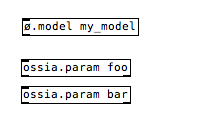
In ossia-max, partly due to the filiation with Jamoma, these nodes are called 'models'
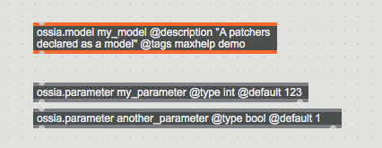
~some_device = OSSIA_Device('supersoftware');
~some_device.exposeOSCQueryServer(1234, 5678);
~node = OSSIA_Node(parent: ~some_device, name: "/foo/bar")
When multiple nodes with the same name are created, they will take instance numbers:
ossia_node_t root = ...;
ossia_node_create(root, "/foo/blu"); // /foo/blu
ossia_node_create(root, "/foo/blu"); // /foo/blu.1
ossia_node_create(root, "/foo/blu"); // /foo/blu.2
opp::oscquery_server dev = ...;
// /foo/blu
dev.get_root_node().create_node("/foo/blu"));
// /foo/blu.1
dev.get_root_node().create_node("/foo/blu"));
// /foo/blu.2
dev.get_root_node().create_node("/foo/blu"));
ossia::net::generic_device dev = ...;
// /foo/bar
ossia::net::create_node(dev, "/foo/bar");
// /foo/bar.1
ossia::net::create_node(dev, "/foo/bar");
// /foo/bar.2
ossia::net::create_node(dev, "/foo/bar");
# This is not the case with python
foo_bar_2 = local_device.add_node("/foo/bar")
print(foo_bar, foo_bar_2)
// Creates /foo/bar, /foo/bar.1, /foo/bar.2
Repeater {
model: 3
Ossia.Node { node: "/foo/bar" }
}
_myGroup.setup(_parent_node, "myGroupAddr"); // -> /myGroupAddr
_myGroup.setup(_parent_node, "myGroupAddr"); // -> /myGroupAddr.1
_myGroup.setup(_parent_node, "myGroupAddr"); // -> /myGroupAddr.2
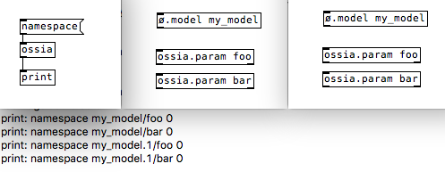
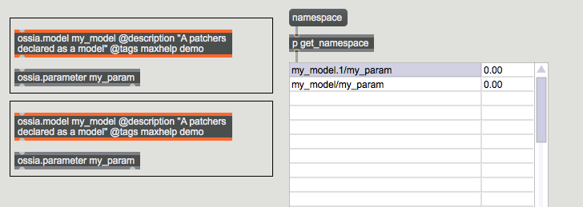
// this is not the case with ossia-supercollider, because of workflow issues
// this will simply overwrite the /foo/bar parameter
~node = OSSIA_Node(parent: ~some_device, name: "/foo/bar");
~node_1 = OSSIA_Node(parent: ~some_device, name: "/foo/bar");
Exploring nodes
The node structure is a tree that can be explored from the device root node as deep as needed going thru each child recursively. It is also possible to search for a particular node or a set of nodes using #pattern-matching features.
# a function to iterate on node's tree recursively
def iterate_on_children(node):
for child in node.children():
print(str(child))
iterate_on_children(child)
# iterate on local device from the root
iterate_on_children(local_device.root_node)
Creating parameters
Each node can only have a single parameter. Parameters can have the following types:
- Integer: 32-bit int.
- Floating-point: 32-bit float.
- Boolean: true/false.
- Impulse: no value; just a message.
- ASCII Character: 'a', '0', '$'...
- String
- Tuple: a generic list of values:
[3, 'a', 2.68, ["foo", "bar"]]
As an optimisation, specific types for 2, 3, and 4 floats are provided; they are referred to as Vec2f, Vec3f, Vec4f through the code.
Values can be written to a parameter, and fetched from it.
This example shows how to create a node, a parameter, send a value to the parameter and how to read it back.
First we create a parameter
ossia_node_t a_node = ...;
ossia_parameter_t a_parameter = ossia_node_create_parameter(a_node, FLOAT_T);
opp::node root = ...;
opp::node n = root.create_float("/foo/bar");
ossia::net::node_base& n = ...;
auto param = n.create_parameter(val_type::FLOAT);
float_node = ...
float_parameter = float_node.create_parameter(ossia.ValueType.Float)
# Paremeter types macro :
# ossia.ValueType.Bool
# ossia.ValueType.Int
# ossia.ValueType.Float
# ossia.ValueType.Char
# ossia.ValueType.String
# ossia.ValueType.Vec2f
# ossia.ValueType.Vec3f
# ossia.ValueType.Vec4f
# ossia.ValueType.List
// A parameter is node + parameter.
Ossia.Parameter {
id: param
node: "/tata"
valueType: Ossia.Type.Float
}
// Used for valueless parameters
Ossia.Signal {
id: sig
node: "/toto"
}
ossia::Parameter<float> _mySize;
ossia::Parameter<ofVec2f> _myPosition;
ossia::Parameter<bool> _myBool;
ossia::Parameter<ofColor> _myColor;
_mySize.setup(_myParent,"theSize",ofRandomf()*99+1,1.,100.);
_myPosition.setup(_myParent,
"thePosition",
ofVec2f(ofRandomWidth(), ofRandomHeight()),
ofVec2f(0., 0.), // Min
ofVec2f(ofGetWidth(), ofGetHeight())); // Max
//Here we create a subNode for colors
//This was declared first in the .h file as:
// ossia::ParameterGroup _colorParams;
_colorParams.setup(_myParent, "colorParams");
_myColor.setup(_colorParams,
"theColor",
ofColor(ofRandom(255), ofRandom(255), ofRandom(255), 255.),
ofColor(0., 0., 0., 0.),
ofColor(255., 255., 255., 255.));
_myBool.setup(_colorParams,"fill",false);
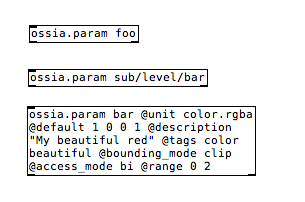
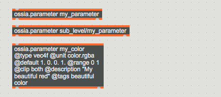
~param = OSSIA_Parameter(~some_device, 'int_test', Integer);
~sigparam = OSSIA_Parameter(~some_device, 'signal_test', Signal);
Then we can send values to this parameter
ossia_parameter_push_f(a_parameter, 345.);
n.set_value(2.34);
param->push_value(3.56);
bool_parameter.value = True
int_parameter.value = 9
float_parameter.value = 2.5
char_parameter.value = 'a'
string_parameter.value = "hello world !"
vec3f_parameter.value = [0, 146.5, 207]
list_parameter.value = [44100, "test.wav", 0.9]
onSomething: {
param.value = 123;
sig.trigger();
}
Values can be sent (to the inlet) and read (from the outlet) locally to the object.
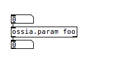
Values can be sent (to the inlet) and read (from the outlet) locally to the object.
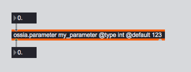
~param.value = 347;
// equivalent to: (faster for livecoding)
~param.v = (347) // 1st shortcut
~param.sv(347) // 2nd shortcut
And read them
/* Get the current value */
ossia_value_t val = ossia_parameter_clone_value(a_parameter);
/* Request the value to the server if any */
ossia_value_t val = ossia_parameter_fetch_value(a_parameter);
/* Get the current value */
opp::value v = n.get_value();
/* Request the value to the server if any */
opp::value v = n.fetch_value();
// Get the current value
param->value();
// Request the value to the server if any and wait until it is received to return it.
param->fetch_value();
// Just request the value.
param->request_value();
// Request the value and get a std::future that can be used later.
auto fut = param->pull_value_async();
# Get the value (request to the server if any)
val_sync = parameter.value
# Copy the value (without any request to the server if any)
val_copy = parameter.clone_value()
console.log(param.value)
ofSetColor(_myColor.get());
ofDrawCircle(_myPosition.get(),_mySize.get());
Values can also be sent and read remotely with the [ossia.remote] object.
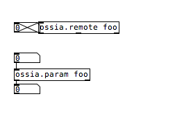
Values can also be sent and read remotely with the [ossia.remote] object.
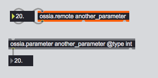
~param.value.postln;
~param.v.postln;
Parameter callbacks
Parameter callbacks will inform you every time a parameter receives a message. On environments that support this, this will enable listening on the remote end. That is, if a remote device has no callbacks, network messages won't be sent upon modification.
void my_callback(void* n, ossia_value_t v)
{
/* 0 if it's not a float */
float f = ossia_value_to_float(v);
/* safe */
float g = ossia_value_convert_float(v);
/* ownership of the value is transfered to the callback */
ossia_value_free(v);
}
...
ossia_parameter_t a_parameter = ...;
ossia_parameter_push_callback(a_parameter, my_callback, NULL);
void my_callback(void* ctx, const opp::value& v)
{
float f = v.to_float();
}
...
opp::node n = ...;
n.set_value_callback(my_callback, 0);
ossia::net::node_base& n = ...;
auto param = n.create_parameter(val_type::FLOAT);
param->add_callback([] (const ossia::value& v) {
// if you are sure of the type, this is fast:
float f = v.get<float>();
// if you are not, this is safe:
float maybe_f = ossia::convert<float>(v);
});
# two ways to do it
# FIRST WAY : attach a callback function to the parameter
def value_callback(v):
print(v)
parameter.add_callback(value_callback)
# SECOND WAY : attach a message queue to a device and register the parameter to the queue
messageq = ossia.MessageQueue(device)
messageq.register(parameter)
while(True):
message = messageq.pop()
if(message != None):
parameter, value = message
print("messageq : " + str(parameter.node) + " " + str(value))
time.sleep(0.01)
Ossia.Parameter {
onValueChanged: console.log(value)
}
Ossia.Signal {
onTriggered: console.log("hi");
}
N/A
N/A
~param.callback = { |value|
format("value received: %", value).postln;
}
Property binding
This show how, for environments that support it, ossia objects can integrate with existing property environments.
N/A
Rectangle {
// Creates /rect
Ossia.Node
{ node: "rect" }
// Creates /rect/width of type float
Ossia.Property on width
{ }
// Creates /some/node of type float
Ossia.Property on height
{ node: "/some/node" }
}
// Add the Ossia.Object script to your GameObject.
// It will create a new node with the name of your object.
// Child objects with the script will be placed as childs in the
// node hierarchy.
// Afterwards, other behaviours can expose properties like this:
public class Banana : MonoBehaviour {
// Creates /Frequency
[Ossia.Expose]
public int Frequency;
// Creates /Foo
[Ossia.Expose("Foo")]
public int Bar;
}
N/A yet - the [ossia.declare] object is planned to be implemented in the future
for automatically declaring atributes of complex objects (such as jit.gl.*)
// In SuperCollider, parameters can easily be integrated with a SynthDef using the .aar, .ar and .kr methods.
~freq = OSSIA_Parameter(~some_device, 'freq', Float, [440, 880], 440);
// bind the frequency parameter to the synthdef, becoming an argument
d = SynthDef('sinosc', {
Out.ar(0, SinOsc.ar(~freq.kr, 0, 0.25));
}).add;
// the aar convenience method returns an array with parameter's name and current value
x = Synth('sinosc', ~freq.aar);
// changing the value of the parameter will automatically update the synth argument's value
~freq.value = 660;
Device callbacks
Device callbacks can be used to react to creation or removal of nodes in a given device.
#include <ossia/ossia.hpp>
#include <ossia/network/oscquery/oscquery_mirror.hpp>
...
struct MyObject
: public Nano::Observer
{
ossia::net::generic_device device;
MyObject()
{
device.on_node_created.connect<MyObject, &MyObject::node_created>(*this);
device.on_node_removing.connect<MyObject, &MyObject::node_removing>(*this);
}
void node_created(const ossia::net::node_base&) { }
void node_removing(const ossia::net::node_base&) { }
}
remote_device = ...
# attach callbacks to remote_oscquery_device
def on_creation_callback(n):
print("remote_device : " + str(n) + " created")
def on_renamed_callback(n):
print("remote_device : " + str(n) + " renamed")
def on_removing_callback(n):
print("remote_device : " + str(n) + " removed")
device_callback = ossia.DeviceCallback(remote_device, on_creation_callback, on_renamed_callback, on_removing_callback)
N/A
N/A
N/A
// This shows how to automatically wait for the device to be instantiated
// before creating your own tree of nodes & parameters
// necessary if you want to build all in a single code region:
(
~some_device = OSSIA_Device.newOSCQueryServer('supersoftware', 1234, 5678, {
~foo = OSSIA_Node(~some_device, 'foo');
~bar = OSSIA_Parameter(~foo, 'bar', Float);
}
)
Remote OSCQuery Device
This shows how to connect to an existing OSCquery device, and refresh the image that we have of it.
#include <ossia-c/ossia-c.h>
...
ossia_protocol_t proto = ossia_protocol_oscquery_mirror_create("ws://localhost:5678");
ossia_device_t dev = ossia_device_create(proto, "my_mirror");
ossia_device_update_namespace(dev);
...
ossia_device_free(dev);
ossia_protocol_free(proto);
#include <ossia-cpp/ossia-cpp98.hpp>
...
opp::oscquery_mirror mirror{"my_mirror", "ws://localhost:5678"};
mirror.refresh();
#include <ossia/ossia.hpp>
#include <ossia/network/oscquery/oscquery_mirror.hpp>
...
ossia::net::generic_device dev{
std::make_unique<ossia::oscquery::oscquery_mirror_protocol>("ws://localhost:5678"),
"my_mirror"};
dev.get_protocol()->update(dev);
# try to connect to a remote device using OSCQuery protocol
remote_oscquery_device = ossia.OSCQueryDevice("remoteOSCQueryDevice", "ws://127.0.0.1:5678", 9998)
# update the remote OSCQuery device namespace
remote_oscquery_device.update()
import Ossia 1.0 as Ossia
...
Ossia.OSCQueryMirror {
name: "my_mirror"
host: "ws://localhost:5678"
}
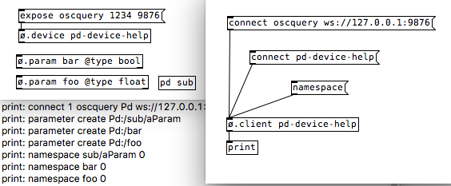
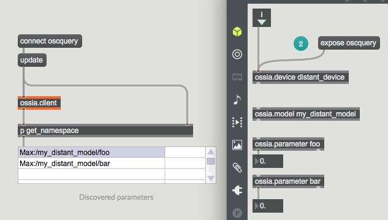
// create a local device in any application, for this example, we'll do this directly in SuperCollider
(
d = OSSIA_Device('my_device').exposeOSCQueryServer(1234, 5678, {
p = OSSIA_Parameter(d, 'my_parameter', Float).value_(22.5);
});
)
// create a remote mirror image of the device
m = OSSIA_Device('my_remote');
m.exposeOSCQueryMirror("ws://localhost:5678");
// get the root node's direct children
m.children; // posts [ my_parameter ]
// create a mirror image of a parameter and query its value
q = OSSIA_MirrorParameter(m, '/my_parameter');
q.value; // posts 22.5
// remotely modify the value of the original parameter
q.value = 25.0;
p.value; // posts 25
Advanced networking
Local Midi device
Open a Midi Input/Output port to allow local device to receive/emit Midi protocol messages.
N/A
N/A
N/A
N/A
N/A
N/A
N/A
N/A
N/A
N/A
Local OSC device
Map local device namespace using OSC protocol.
To be controled by a remote OSC client we need to setup a local port where client OSC messages will arrive. Sometimes the local device sends OSC messages back to be observed by a client which needs to setup the client ip and port.
# local device is supposed to be created
# enable OSC communication to allow a client to control and observe local device
# arguments are : client ip, client port, local device port, enable logging
local_device.create_osc_server("127.0.0.1", 9997, 9996, False)
Remote Midi device
Connect to a Midi Input/Output port to observe/send Midi protocol messages from/to a remote device.
# scan to get midi devices list
midi_devices = ossia.list_midi_devices()
for data in midi_devices:
print(str(data.type) + ": device = " + data.device + ", port = " + str(data.port))
# connect to the first device using MIDI protocol
remote_midi_device = ossia.MidiDevice("remoteMidiDevice", midi_devices[0])
Remote OSC device
Map remote device namespace using OSC protocol.
To control a remote OSC device we need to setup the remote ip and port. Sometimes a remote OSC device also sends OSC messages back which needs to setup a local port.
To send and receive values to each parameter, we also have to declare the namespace as any ossia device.
# enable to OSC communication to control and observe a remote device
# arguments are : remote device name, remote device ip, remote device port, client port
remote_osc_device = ossia.OSCDevice("remoteOSCDevice", "127.0.0.1", 10000, 10001)
OSCQuery instances
Being able to create and remove objects in reaction to OSCQuery messages
Raw messages
Being able to send messages without the node actually existing in the tree, e.g. like a "basic" OSC library
Pattern matching
Address a set of nodes using OSC 1.1 pattern matching.
Valid patterns are for instance:
- /foo/bar.* -> matches /foo/bar.0, /foo/bar.100, /foo/bar.bob
- /{foo,boo}/bar -> matches /foo/bar, /boo/bar
- /foo[1-5] -> matches /foo1, /foo2, ... /foor5
- //bar -> matches /foo/bar, /foo/bar.123/bar, etc.
- //bob/../foo -> given /foo/bob and /foo/bar.123/bob, matches /foo
Because of the way instances of nodes are created when duplicating them (see #creating-nodes), we have added a special wildcard, '!', that matches all instances including the original one, e.g. /foo! matches /foo, /foo.1 and /foo.bob
Brace expansion is also implemented, which allows for more matching, such as:
- /foo.{5..23} will match /foo.5 to /foo.23
- /foo.{5..23..7} will match /foo.5, /foo.12, foo.17 (by steps of 7 for instance)
Then it is possible to send and receive values to/from the set of pattern matching nodes.
Getting all nodes that match a pattern
ossia_node_t node = ...;
ossia_node_t* data;
size_t sz;
ossia_node_find_pattern(node, "/foo/bar.*", &data, &sz);
...
ossia_node_array_free(data);
// The pattern matching process can starts from several nodes
ossia::net::node_base& node1 = ...;
ossia::net::node_base& node2 = ...;
std::vector<ossia::net::node_base*> vec{&node1, &node2};
// The path object can be cached if it is going to be reused.
if (auto path = ossia::traversal::make_path("/foo/bar.*"))
ossia::traversal::apply(*path, vec);
// vec now contains the matching nodes.
// The pattern matching process can starts from several nodes
node_vector = [node1, node2]
node_vector = list_node_pattern(node_vector, "/foo/bar.*")
// node_vector now contains the matching nodes.
N/A
Node root = ...;
Node[] res = Node.FindPattern(root, "/foo/bar.*");
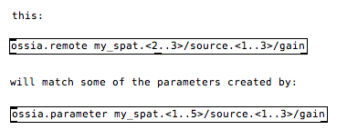
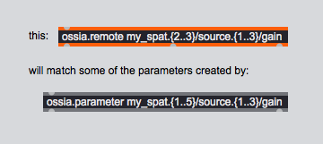
Sending messages to multiple nodes
// Do a loop
// Do a loop
// Do a loop
for node in node_vector :
node.parameter.value = ...
N/A
// Do a loop
Notice that, due to the tcl/tk graphical framework on which pd is based
curly braces: {} are not allowed, so they have to be preplaced with '<>'
Also, commas aren't allowed, so you have to replace them with pipes: '|'
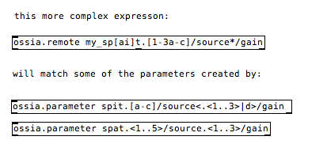
Notice that, due to the use of commas as message separators in Max,
you'll have to use pipes instead: "|"
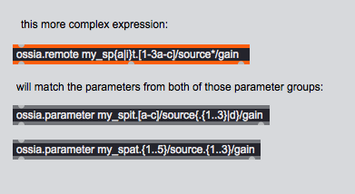
Receiving messages from multiple nodes
N/A
N/A
N/A
# FIRST WAY : attach a callback function to each matching node's parameter
def value_callback(v):
print(v)
for node in node_vector:
node.parameter.add_callback(value_callback)
# SECOND WAY : attach a message queue to a device
# then register each matching node's parameter to the queue
messageq = ossia.MessageQueue(device)
for node in node_vector:
messageq.register(node.parameter)
# wait and change the value
while True:
message = device_messageq.pop()
if message != None :
parameter, value = message
print("device_messageq : " + str(parameter.node) + " " + str(value))
time.sleep(0.01)
N/A
N/A
Batch node creation
It is posible to create several nodes in a raw using regex-like expressions similar to the ones used when doing pattern matching.
Only [] and {} are possible. e.g.
/foo/{bar,baz}.[0-9][0-9]/bob.{3..12..2}
ossia_node_t node = ...;
ossia_node_t* data;
size_t sz;
ossia_node_create_pattern(node, "/foo/bar.*", &data, &sz);
...
ossia_node_array_free(data);
// The path object can be cached if it is going to be reused.
ossia::net::node_base& node = ...;
auto nodes = ossia::net::create_nodes(node, "/foo/{bar,baz}.[0-9][0-9]");
N/A
N/A
Node root = ...;
Node[] res = Node.CreatePattern(root, "/foo/{bar,baz}.[0-9][0-9]");
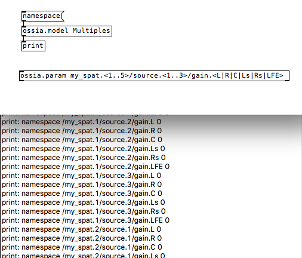
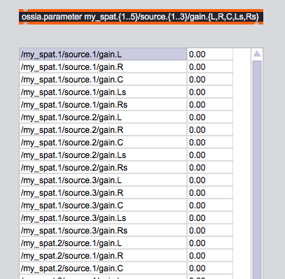
Node and parameter attributes
This part presents the attributes that can be set on nodes and parameters.
When using OSCQuery, all attribute changes will propagate across the network, except mute which is local. The "enabled/disabled" attribute has the same effect but does propagate.
Access mode
Access mode is a metadata that categorizes parameters between:
- GET: read-only
- SET: write-only
- BI: read-write
For instance:
- The value of a vu-meter should be GET
- A "play" button should be SET.
- The cutoff of a filter or a controllable color should be BI.
ossia_parameter_t param = ...;
ossia_parameter_set_access_mode(param, BI);
opp::node& node = ...;
node.set_access(Bi);
ossia::net::node_base& node = ...;
ossia::net::set_access_mode(node, ossia::access_mode::BI);
float_parameter.access_mode = ossia.AccessMode.Get
# Parameter access mode macro :
# ossia.AccessMode.Get
# ossia.AccessMode.Set
# ossia.AccessMode.Bi
Ossia.Parameter {
access: Ossia.Bi
}
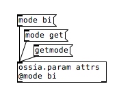
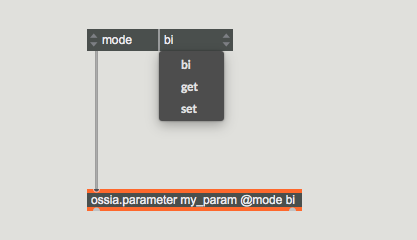
~some_parameter.access_mode = OSSIA_access_mode.bi;
~some_parameter.access_mode = 'bi'; // equivalent #1
~some_parameter.access_mode = 'rw'; // equivalent #2
Domain (min/max)
Domains allow to set a range of accepted values for a given parameter. Only meaningful for nodes with parameters.
This sets a node's range between -5 and 5.
ossia_node_t node = ...;
ossia_value_t min = ossia_value_create_int(-5);
ossia_value_t max = ossia_value_create_int(5);
ossia_domain_t dom = ossia_domain_make_min_max(min, max);
ossia_parameter_set_domain(dom);
ossia_value_free(min);
ossia_value_free(max);
ossia_domain_free(dom);
opp::node& node = ...;
node.set_min(-5);
node.set_max(5);
ossia::net::node_base& node = ...;
auto dom = ossia::net::make_domain(-5., 5.);
ossia::net::set_domain(node, dom);
float_parameter.make_domain(-5, 5)
float_parameter.apply_domain()
Ossia.Parameter {
..
min: -5
max: 5
}
Ossia.Parameter param = ...;
param.SetMin(new Value(-5));
param.SetMax(new Value(5));
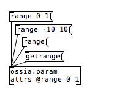
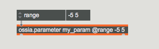
// Set domain either at parameter creation, or later on...
~param_1 = OSSIA_Parameter(~some_device, 'float_param', Float, [-5, 5]);
~param_2 = OSSIA_Parameter(~some_device, 'int_param', Integer, nil);
~param_2.domain = [-5, 5];
If the domain is an array, it is possible to filter per value, or with a single, shared, min / max.
ossia::net::node_base& node = ...;
auto dom = ossia::net::make_domain({0, 0, 0}, {1, 10, 10});
ossia::net::set_domain(node, dom);
vec3f_parameter.make_domain([50, 100, 150], [100, 150, 200])
vec3f_parameter.apply_domain()
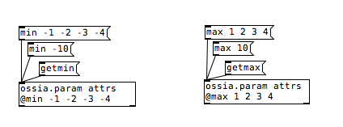
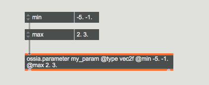
~param = OSSIA_Parameter(~some_device, 'vector', OSSIA_Vec3f);
~param.domain = [[0.0, 1.0, 2.0], [1.0, 5.0, 10.0]]; // unique min/max ranges for each value, first array represents the min values, second array the max values
Instead of a min / max, it is also possible to give a set of accepted values. Values that don't fit will be rounded to the closest accepted value.
ossia::net::node_base& node = ...;
auto dom = ossia::net::init_domain(ossia::val_type::INT);
ossia::net::set_values(dom, {-1, 1, 2, 3, 5, 10});
ossia::net::set_domain(node, dom);
char_parameter.make_domain(['a', 'b', 'c', 'd'])
char_parameter.apply_domain()
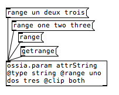
This works with the 'string' @type
If @clip is at any other value than 'off' values outside of the range won't be output
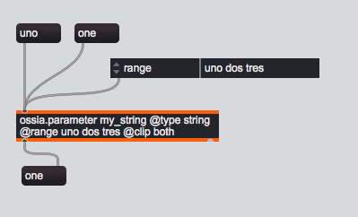
This works with the 'string' @type
If @clip is at any other value than 'off' values outside of the range won't be output
~param = OSSIA_Parameter(~some_device, 'my_param', Integer,
OSSIA.domain(values: [1, 3, 5]), 3);
Bounding mode
The bounding mode tells what happens when a value is outside of the min / max:
- FREE : no clipping; domain is only indicative.
- CLIP : clipped to the closest value in the range.
- LOW : only clips values lower than the min.
- HIGH : only clips values higher than the max.
- WRAP : wraps values around the range
- FOLD : folds back values into the range
The default is FREE.
ossia_parameter_t param = ...;
ossia_parameter_set_bounding_mode(param, CLIP);
opp::node& node = ...;
node.set_bounding(Clip);
ossia::net::node_base& node = ...;
ossia::net::set_bounding_mode(node, ossia::bounding_mode::CLIP);
float_parameter.bounding_mode = ossia.BoundingMode.Clip
# Parameter bounding mode macro :
# ossia.BoundingMode.Free
# ossia.BoundingMode.Clip
# ossia.BoundingMode.Low
# ossia.BoundingMode.High
# ossia.BoundingMode.Wrap
# ossia.BoundingMode.Fold
Ossia.Parameter {
bounding: Ossia.Clip
}
In pd, this is done with the '@clip' attribute.Also, clipping on both ends is done with 'both' (instead of 'CLIP')
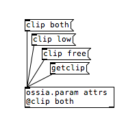
In Max, this is done with the '@clip' attribute.Also, clipping on both ends is done with 'both' (instead of 'CLIP')
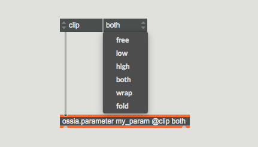
// same as domain:
~param = OSSIA_Parameter(~some_device, 'param', Float, [0, 2017], bounding_mode: 'clip');
~param.bounding_mode = OSSIA_bounding_mode.high;
~param.bounding_mode = 'high'; // equivalent;
Repetition filter
When the repetition filter is enabled, if the same value is sent twice, the second time will be filtered.
ossia_parameter_t param = ...;
ossia_parameter_set_repetition_filter(param, 1);
opp::node& node = ...;
node.set_repetition_filter(true);
ossia::net::node_base& node = ...;
ossia::net::set_repetition_filter(node, ossia::repetition_filter::ON);
int_parameter.repetition_filter = ossia.RepetitionFilter.On
# Parameter repetition filter macro :
# ossia.RepetitionFilter.Off
# ossia.RepetitionFilter.On
Ossia.Parameter {
filterRepetitions: Ossia.Filtered
}
In pd, this is done reversely, with the '@repetitions' attribute.When on (by default), repetitions are allowed to happen. When off, they are filtered out.
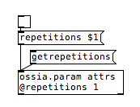
In Max, this is done reversely, with the '@repetitions' attribute.When on (by default), repetitions are allowed to happen. When off, they are filtered out.
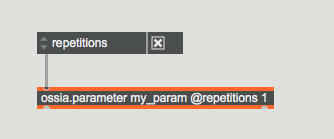
p = OSSIA_Parameter(~some_device, 'p', Float, [0, 1], repetition_filter: true);
p.repetition_filter = false;
Units
Units give a semantic meaning to the value of a parameter.
ossia_parameter_t param = ...;
ossia_parameter_set_unit(param, "color.rgba");
opp::node& node = ...;
node.set_unit("color.rgba");
ossia::net::node_base& node = ...;
// In the core library, units are part of the type system
ossia::net::set_unit(node, ossia::rgba_u{});
// they can also be set from text
auto unit = ossia::parse_pretty_unit("color.hsv");
ossia::net::set_unit(node, unit);
parameter.unit = "color.hsv"
Ossia.Parameter {
unit: "color.hsv"
}
// When bound to a specific value, the unit is matched if possible.
Ossia.Property on color {
// will be argb
}
Ossia.Property on position {
// will be xy
}
// etc for all common Qt types
Units can be specified, with the @unit argument, by providing their full names.i.e. using the syntax "category.unit"
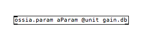
They can also be provided by their unit name only (unit names being unique)
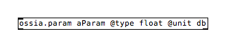
Remotes can be specified a unit belonging to the same category as the parameter's unitand they will automatically convert parameter values to/from this unit

As the type is deduced from the unit, we can omit it, or even provide the unitdirectly under the @type attribute:
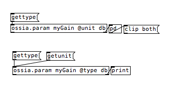
Units can be specified, with the @unit argument, by providing their full names.i.e. using the syntax "category.unit"
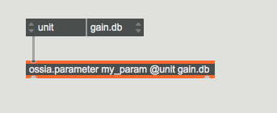
They can also be provided by their unit name only (unit names being unique)
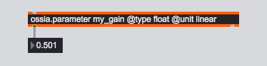
Remotes can be specified a unit belonging to the same category as the parameter's unitand they will automatically convert parameter values to/from this unit
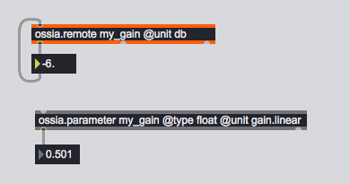
As the type is deduced from the unit, we can omit it, or even provide the unitdirectly under the @type attribute:
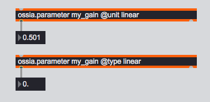
~color = OSSIA_Parameter(~some_device, 'color', Vec4f);
p.unit = OSSIA_color.rgba;
List of units
Position
- cart2D
- cart3D
- spherical
- polar
- opengl
- cylindrical
Orientation
- quaternion:
- euler:
- axis:
Color
- argb: all between 0 - 1
- rgba:
- rgb:
- bgr:
- argb8: all between 0 - 255
- hsv:
- cmy8:
- todo: css? (rgb in 0, 1 and alpha in 0, 255)
Angle
- degree
- radian
Distance
- meter
- kilometer
- decimeter
- centimeter
- millimeter
- micrometer
- nanometer
- picometer
- inch
- foot
- mile
Time
- second
- bark
- bpm
- cent
- frequency
- mel
- midi_pitch
- millisecond
- playback_speed
Gain
- linear
- midigain
- decibel
- decibel_raw
Speed
- meter_per_second
- miles_per_hour
- kilometer_per_hour
- knot
- foot_per_second
- foot_per_hour
Extended type
Extended types, just like units, are here to give an indicative meaning to a parameter. They can also be used to enable some optimizations.
libossia proposes the following types:
- File path : used for when a string is a filesystem path, like
/home/self/sound.wavorc:\document.txt - Generic buffer : when a string should be interpreted as a a raw binary blob.
- Float array : when a parameter has a fixed number of floating point values, like vec2f.
- Float list : when a tuple consists exclusively of values of type float.
- Same for int list and string list.
- Dynamic array : when a tuple's size may change during execution.
ossia_parameter_t param = ...;
ossia_parameter_set_extended_type(param, "filepath");
// TODO node.set_type(std::string);
ossia::net::node_base& node = ...;
ossia::net::set_extended_type(node, ossia::generic_buffer_type());
node.extended_type = "filepath"
Ossia.Node {
extendedType: "filepath"
}
//TBI
Instance bounds
For nodes that can have instantiatable children, this sets the minimum and maximum number of children that can exist. This is not enforced and is only to be relied upon as a metadata.
This is an optional attribute.
This sets the instance bounds to [0 - 100].
ossia_node_t node = ...;
ossia_node_set_instance_bounds(node, 0, 100);
ossia_node_unset_instance_bounds(node);
int min, max;
int ok;
ossia_node_get_instance_bounds(node, &min, &max, &ok);
if(ok) {
// min and max are meaningful
}
opp::node& node = ...;
node.set_instance_bounds(0, 100);
node.unset_instance_bounds();
ossia::net::node_base& node = ...;
ossia::net::set_instance_bounds(node, {0, 100});
ossia::net::set_instance_bounds(node, ossia::none);
node.instance_bounds = ossia.InstanceBounds(1, 100)
print('instance_bounds : {' + str(node.instance_bounds.min) + ', ' + str(node.instance_bounds.max) + '}')
// TODO
// TBI
Description
An optional textual description.
ossia_node_t node = ...;
ossia_node_set_description(node, "a pretty node");
ossia_node_unset_description(node);
const char* desc = ossia_node_get_description(node);
ossia_string_free(desc);
opp::node& node = ...;
node.set_description("a pretty node");
ossia::net::node_base& node = ...;
ossia::net::set_description(node, "a pretty node");
node.description = "a pretty node"
Ossia.Node {
description: "a pretty node"
}
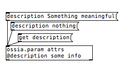
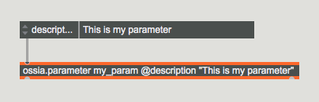
n = OSSIA_Node(~some_device, 'pretty_node');
n.description = "a pretty node";
Tags
An optional array of tags for nodes.
ossia_node_t node = ...;
const char* tags[2] = {"video", "funny"};
ossia_node_set_tags(node, tags, 2);
opp::node& node = ...;
node.set_tags({"video", "funny"});
ossia::net::node_base& node = ...;
ossia::net::set_tags(node, {"video", "funny"});
node.tags = ["video", "funny"]
Ossia.Node {
tags: ["video", "funny"]
}
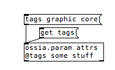
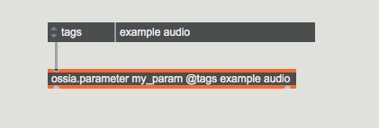
n = OSSIA_Node(~some_device, 'synth_1');
n.tags = ['physical_model', "awesome"];
Priority
Nodes with the highest priority should execute first.
ossia_node_t node = ...;
ossia_node_set_priority(node, 10);
ossia_node_unset_priority(node);
opp::node& node = ...;
node.set_priority(10);
node.unset_priority();
ossia::net::node_base& node = ...;
ossia::net::set_priority(node, 10);
ossia::net::set_priority(node, ossia::none);
node.priority = 10
Ossia.Node {
priority: 10
}
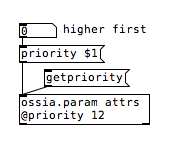
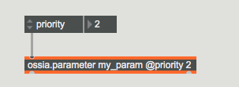
n = OSSIA_Node(~some_device, 'super_important_node');
n.priority = 10;
Refresh rate
An optional value that says how often a value should be updated. Currently does not work in all implementations.
ossia_node_t node = ...;
ossia_node_set_refresh_rate(node, 10);
ossia_node_unset_refresh_rate(node);
opp::node& node = ...;
node.set_refresh_rate(10);
node.unset_refresh_rate();
ossia::net::node_base& node = ...;
ossia::net::set_refresh_rate(node, 10);
ossia::net::set_refresh_rate(node, ossia::none);
node.refresh_rate = 10
Ossia.Node {
refresh_rate: 10
}
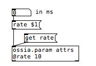
n = OSSIA_Node(~some_device, 'laggy_node');
n.refresh_rate = 500;
Step size
An optional value that says by which increment a value should change, for instance in a value editor.
ossia_node_t node = ...;
ossia_node_set_value_step_size(node, 10);
ossia_node_unset_value_step_size(node);
opp::node& node = ...;
node.set_value_step_size(10);
node.unset_value_step_size();
ossia::net::node_base& node = ...;
ossia::net::set_value_step_size(node, 10);
ossia::net::set_value_step_size(node, ossia::none);
node.value_step_size = 10
Ossia.Node {
stepSize: 10
}
Default value
A default value for a given node. Useful for resetting to a default state.
ossia_node_t node = ...;
ossia_value_t val = ossia_value_create_float(23.4);
ossia_node_set_default_value(node, val);
ossia_value_free(val);
val = ossia_node_get_default_value(node);
if(val)
ossia_value_free(val);
ossia_node_set_default_value(node, NULL);
opp::node& node = ...;
node.set_default_value(23.4);
node.unset_default_value();
ossia::net::node_base& node = ...;
ossia::net::set_default_value(node, 23.4);
ossia::net::set_default_value(node, ossia::none);
parameter.default_value = 10
Ossia.Node {
defaultValue: 23.4
}
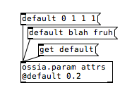
Due to a bug, the attribute is currently called '@defval'
p = OSSIA_Parameter(~some_device, 'foo', Float, [0, 1], default_value: 0.5);
Zombie
This is a read-only attribute: it informs of whether a node is in a zombie state. A zombie node is an node in a remote device, whose source has been removed. It is kept in the mirrors but marked as such.
ossia_node_t node = ...;
int z = ossia_node_get_zombie(node);
opp::node& node = ...;
bool z = node.get_zombie();
ossia::net::node_base& node = ...;
bool z = ossia::net::get_zombie(node);
node.zombie = True
N/A
~some_param.zombie;
Critical
This attribute informs the network protocol that the value has a particular importance and should if possible use a protocol not subject to message loss, eg TCP instead of UDP. This is useful for instance for "play" messages.
ossia_node_t node = ...;
ossia_node_set_critical(node, 1);
ossia_node_set_critical(node, 0);
opp::node& node = ...;
node.set_critical(true);
ossia::net::node_base& node = ...;
ossia::net::set_critical(node, true);
node.critical = True
Ossia.Node {
critical: true
}
p = OSSIA_Parameter(~some_device, 'foo', Signal, critical: true);
p.critical = false;
Enabled/Disabled
This attribute will disable a node: it will stop sending messages to the network.
ossia_node_t node = ...;
ossia_node_set_disabled(node, 1);
opp::node& node = ...;
node.set_disabled(true);
ossia::net::node_base& node = ...;
ossia::net::set_disabled(node, true);
node.disabled = True
Ossia.Node {
disabled: true
}
n = OSSIA_Node(~some_device, 'some_node');
n.disable;
n.enable;
n.is_disabled;
Hidden
This attribute is to use for nodes that are not to be exposed to the network.
ossia_node_t node = ...;
ossia_node_set_hidden(node, 1);
opp::node& node = ...;
node.set_hidden(true);
ossia::net::node_base& node = ...;
ossia::net::set_hidden(node, true);
node.hidden = True
Ossia.Node {
hidden: true
}
n = OSSIA_Node(~some_device, 'hidden_node').hidden_(true);
Muted
This attribute will disable a node: it will stop sending messages to the network. Unlike the "enabled/disabled" attribute, it won't propagate to other computers.
ossia_node_t node = ...;
ossia_node_set_muted(node, 1);
opp::node& node = ...;
node.set_muted(true);
ossia::net::node_base& node = ...;
ossia::net::set_muted(node, true);
node.muted = True
Ossia.Node {
muted: true
}
This will prevent ossia.parameter from outputting local (i.e. fed from the input) values
Remote values will still come out
This also works (locally) with remotes: they will stop sending and receiving to the bound parameter.
This will prevent ossia.parameter from outputting local (i.e. fed from the input) values
Remote values will still come out
This also works (locally) with remotes: they will stop sending and receiving to the bound parameter.
n = OSSIA_Node(~some_device, 'muted_node').muted_(true);
n.muted = false;
Preset support
Loading and saving presets
Ossia provides preset handling. Files can be loaded and save to the disk to set the state of the device tree.
Create a preset from a device:
ossia_preset_t preset;
ossia_devices_make_preset(device, &preset);
This will also work on ossia.model and ossia.client
This will also work on ossia.model and ossia.client
d = OSSIA_Device('my_device');
d.exposeOSCQueryServer(1234, 5678, {
p = OSSIA_Parameter(d, 'param_1', Float, [0.0, 1.0], 0.5);
q = OSSIA_Parameter(d, 'param_2', Integer);
g = OSSIA_Parameter(d, 'param_3', String, nil, "hello");
});
d.save_preset(); // if no path is explicitly specified, this will open a dialog
Write the preset to a file:
ossia_presets_write_json(preset, "root_name", "foo/preset.json");
Load the preset:
ossia_preset_t preset;
ossia_preset_result res = ossia_presets_read_json(
"path/to/mypreset.json",
&preset);
if(res != OSSIA_PRESETS_OK) {
...
}
This will also work on ossia.device and ossia.client
This will also work on ossia.device and ossia.client
Apply the loaded preset to a device:
ossia_preset_t preset;
res = ossia_devices_apply_preset(device, preset);
if(res == OSSIA_PRESETS_OK) {
// the preset was successfuly applied
}
// Add a PresetController script somewhere
// Set the following script order :
On the PresetController, press "Load preset":
This will also work on ossia.model and ossia.client
This will also work on ossia.model and ossia.client
p.value = 0.75;
q.value = 127;
g.value = "something else";
// reload the original state preset
d.load_preset();
Preset instances
Being able to create new objects in reaction to the loading of a preset
N/A
Utilities
Logging
Being able to use the libossia logging facilities
# observe all parameters value of a device
device_messageq = ossia.GlobalMessageQueue(device)
# wait and change the value
while True:
message = device_messageq.pop()
if message != None :
parameter, value = message
print("device_messageq : " + str(parameter.node) + " " + str(value))
time.sleep(0.01)
# There is also some logging facilities available for network input/output
# by setting up a flag to True when exposing local device to a protocol
local_device.create_oscquery_server(3456, 5678, True)
local_device.create_osc_server("127.0.0.1", 9997, 9996, True)
TBI